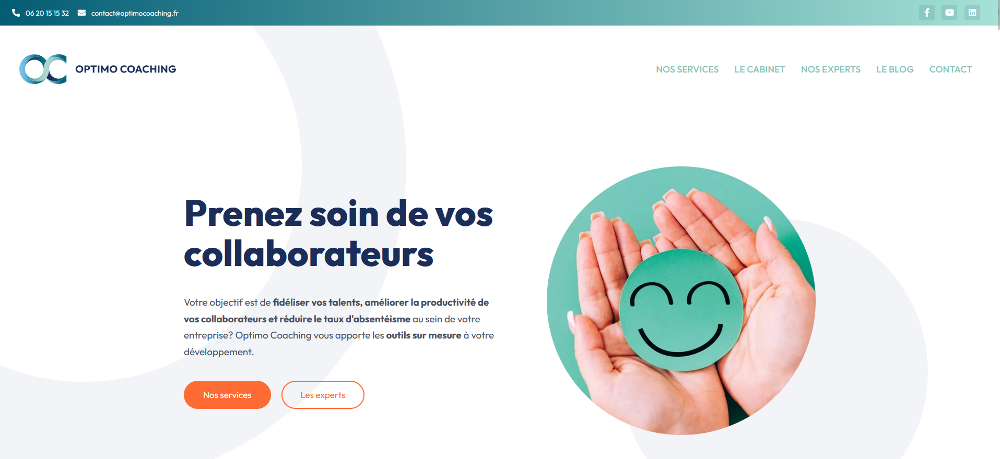
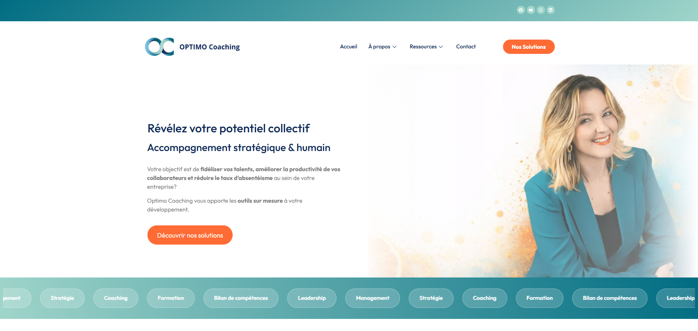

D'un site vitrine en une page à une architecture B2B
Optimo Coaching accompagne des dirigeants de PME depuis 2010. Le cabinet est aussi organisme de formation et centre de bilan de compétences, tous deux certifiés Qualiopi.
- Rôle
- Designer UI/UX et intégratrice
- Durée
- Mars à juillet 2026
- Livrables
- Audit, direction artistique, arborescence, maquettes, intégration
- En ligne
- optimocoaching.fr
Le problème
Le site existant était soigné graphiquement, mais reposait sur une architecture en une seule page : offres, argumentaire, experts, blog et contact empilés dans la page d'accueil. Tout était présent, rien n'était hiérarchisé.


L'audit
J'ai commencé par un audit UI/UX et communication digitale, livré en douze pages : analyse SWOT, revue section par section et recommandations actionnables.
- La promesse d'accueil, « Prenez soin de vos collaborateurs », restait générique en contexte B2B. La proposition de valeur n'était pas perceptible en moins de cinq secondes.
- Les appels à l'action étaient informatifs plutôt qu'engageants.
- Huit blocs de services au même niveau, sans hiérarchie ni parcours guidé : l'utilisateur ne savait pas par où commencer.
- L'architecture en une page pénalisait la crédibilité, la clarté de l'offre et le référencement.
La direction artistique
Un moodboard a fixé le cap avant toute maquette, autour de trois piliers : confiance, dimension humaine, dynamisme.
Couleur
Conservation du socle de marque, bleu nuit et menthe, qui portent le sérieux attendu dans le conseil aux dirigeants. Les deux oranges, jusque-là employés ponctuellement, deviennent un système : réservés aux appels à l'action et aux effets lumineux, ils traduisent le positionnement « vitamine » du cabinet et guident l'œil vers la conversion.
Typographie
Remplacement de Gill Sans par Outfit, dont les formes géométriques et arrondies gagnent en lisibilité et modernisent la marque sans perdre son caractère accueillant.
L'arborescence
La page unique a été éclatée en cinq entrées : Accueil, Nos solutions, À propos, Nos ressources et Contact, avec la certification Qualiopi et les mentions légales en pied de page. Chaque contenu dispose d'une adresse propre, et les deux activités certifiées sortent de l'ombre du bloc unique.
Contrainte assumée : l'arborescence finale a été arbitrée par la dirigeante. Mon rôle a été de la rendre lisible et navigable, puis d'en assurer la conception visuelle et l'intégration.
Le retour après la mise en ligne
Un questionnaire a été diffusé auprès de six profils extérieurs au projet — commercial, ingénieur logiciel, gestionnaire administratif, coach — sur ordinateur et sur mobile.
Précision de méthode : questionnaire de satisfaction diffusé par la cliente auprès de son réseau, et non test d'utilisabilité en conditions neutres. Les notes sont à lire comme un signal de réception, pas comme une mesure.
Vingt-trois notes sur vingt-quatre à 5/5. Les six répondants déclarent que le site leur donne envie de contacter le cabinet ou de le recommander. Les mots qui reviennent : clair, épuré, aéré, navigation facile. Un répondant indique comprendre rapidement que le cabinet intervient par le coaching, la formation et l'audit — l'objectif de lisibilité est atteint.
Ce que le test a fait remonter
Deux retours convergents, plus utiles que les notes : un répondant a cliqué instinctivement sur les termes « Audit », « Coaching » et « Formation » en s'attendant à trouver des pages dédiées ; un autre souhaitait un repère d'orientation face au nombre de thèmes proposés.
Les trois piliers existent bien sur la page d'accueil, conformément à la recommandation de l'audit. Mais leur contenu ne se révèle qu'au survol de la souris, sans page derrière : le visiteur voit trois portes et ne peut pas les franchir.
S'y ajoute une limite que le test n'a pas relevée, parce qu'il a surtout été mené sur ordinateur : le survol n'existe pas sur mobile. Sur téléphone, ces définitions sont inaccessibles ou déclenchées au premier appui, ce qui donne l'impression d'un bouton qui ne répond pas. Pour une cible de dirigeants qui consultent entre deux rendez-vous, c'est le point que je traiterais en premier.
Ce que je ferais autrement
- Mesurer avant, pas seulement après. Aucun indicateur n'avait été relevé sur l'ancien site : sans point de départ, impossible de chiffrer le gain. Je poserais des repères de trafic et de conversion dès l'audit.
- Tester en conditions neutres et sur mobile, avec des tâches à accomplir plutôt qu'une échelle de satisfaction.
- Rendre les trois piliers franchissables : sortir les définitions d'Audit, Coaching et Formation du survol, leur donner une page, et les rendre accessibles au doigt autant qu'à la souris.
Autres missions
- Cartes de visite NFC : prototypes de cartes interactives enregistrant les coordonnées du cabinet au contact du téléphone.
- Identité visuelle réseaux sociaux : système de trois gabarits, codes couleur et typographie définis.
- Marketing digital : planning éditorial, rédaction et programmation des publications, veille numérique.
- Rédaction : articles de blog optimisés pour le référencement, newsletters rédigées et programmées.